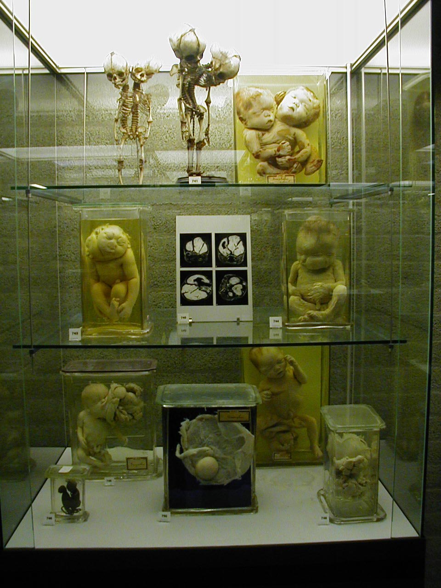

The author describes a specimen in the Vrolik museum labelled as 'acardia amorphus', “a skin-covered sphere with nothing to hint at the child it almost became except for a small umbilical cord, a bit of intestine, and the rudiments of a vertebral column.”
It was a startling description because until then, I did not know that human development could go so awry -- that I could've gone so awry. To think, that I could've been a ball instead of what I am today.
I didn't have easy words to articulate the aspect of what I found so unsettling. Maybe it was the relative 'complexity'?
More than a decade later, I would come across
The Seeming Paradox of Mechanizing Creativity", in Metamagical Themas (Hofstadter)
where he talks about 'sphexishness', or a rough gauge of complexity by how good at 'rut-breaking' it is. It didn't even reach that.
Anyway, it was compelling enough of a concept that I took a detour to Amsterdam from Paris, for less than 24 hours, just to see it in person.
I also found this picture back in 2010ish, when googling variants of this term didn't bring up much. I finally found it by stalking someone's flickr photos of their visit to the Vrolik Museum, where they had conveniently taken a picture of sufficient displays that I was able to spot what I was looking for, like an applied game of 'I spy'.